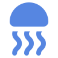
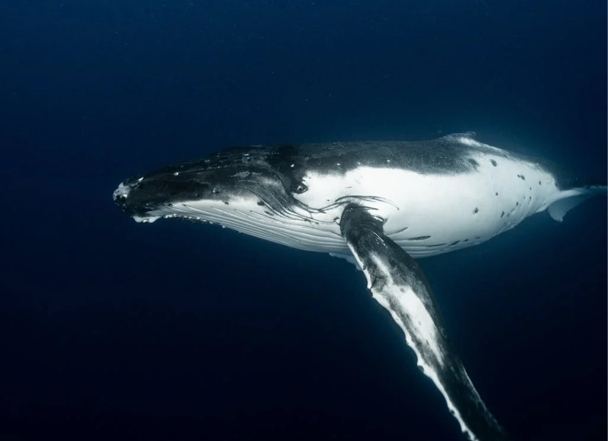
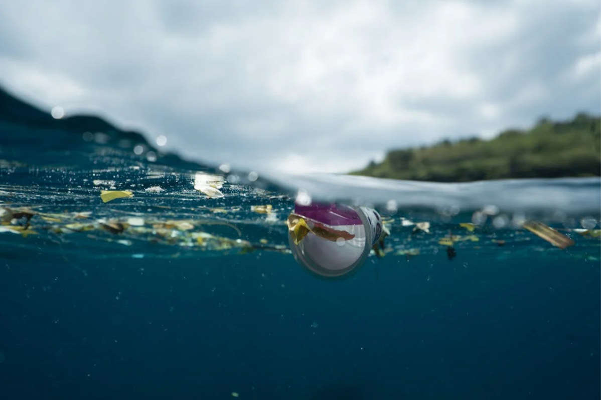

A baleia azul é o maior animal do mundo, vivendo nos oceanos. Ela tem um corpo gigantesco, de cor azul-acinzentada, e se alimenta principalmente de krill. As baleias azuis emitem vocalizações complexas e podem ser encontradas em várias partes do mundo. Infelizmente, elas foram ameaçadas pela caça comercial, mas esforços de conservação estão em andamento para protegê-las.
Bem-Vindo a PROS!
Ajude a cuidar do oceano
conosco!
A PROS (Projeto de Reconstrução de um Oceano Saudável) é uma iniciativa ambiciosa e abrangente dedicada à conservação da vida marinha e à restauração da saúde dos oceanos. Com o objetivo de enfrentar os desafios crescentes da poluição, mudanças climáticas, perda de habitat para os animais e a morte deles, o PROS visa promover a recuperação dos ecossistemas marinhos e garantir um futuro sustentável para os oceanos e suas comunidades.

Central
Temos uma Central localizada em São Paulo que funciona com a ação de voluntários para um futuro melhor, com a ajuda de diversas parcerias pelo Brasil para a produção de projetos de incentivo para o bem estar marinho e a facilitação dele.

Conheça um pouco mais sobre a Baleia-Azul que está em ameaça de extinção!

1 - Sobrepesca: A pesca excessiva esgota populações de peixes
e outros organismos marinhos.
2 - Poluição: Descargas de resíduos industriais,
agrícolas e urbanos contaminam os oceanos, prejudicando os
habitats e espécies.
3 - Acidificação: A absorção de dióxido de carbono pelos
oceanos aumenta sua acidez, afetando negativamente muitas
formas de vida marinha.
4 - Mudanças climáticas: O aumento da temperatura, o
derretimento do gelo e as mudanças nos padrões de correntes
afetam os ecossistemas oceânicos.
5 - Destruição
de habitats: A destruição de manguezais, recifes de coral e
outros habitats costeiros contribui para a perda de
biodiversidade marinha.
As principais causas para a destruição da biodiversidade do oceano!